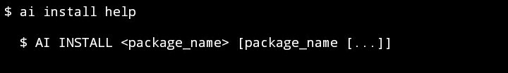
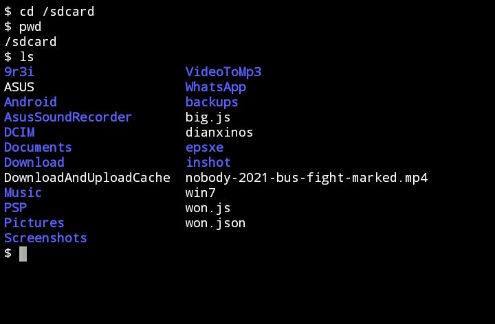
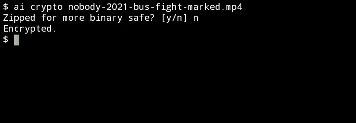
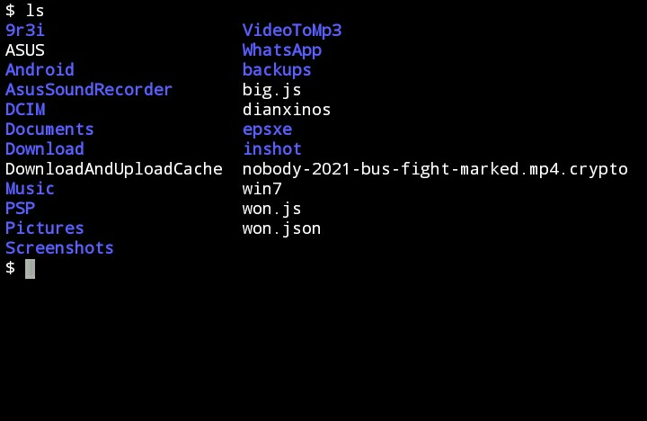

AI (Ayyub-Isa) Console System
(not artificial intelligence)
🇪‌🇳‌🇩-🇺‌🇸‌🇪‌🇷‌ 🇲‌🇦‌🇳‌🇺‌🇦‌🇱‌
Version 0.3.0 (June 4th 2021)
[Home] ·
[English US] ·
[Bahasa Indonesia]
i. Table of Content
A. Help and Information
B. Configuration
C. Cryptographic
D. Registration
E. Packages
F. Tools and Utilities
G. Testing
...
A. Help and Information
One of the most command in AI system is
help, just type:
$ ai help

Generally, every system has a
help command, this is very important to help user to know documentation.
In this
help command, there are many information about the available commands. And AI system default has installed few commands:
1. config
2. crypto
3. help
4. install
5. license
6. pkg
7. reg
8. test
9. tool
10. upgrade
11. version
Some of them are core extensions, including: config, crypto, pkg, reg, test and tool, the rest are directly from core.
Commands that's not included as core extensions are:
1. help, clearly expained above
2. install, to install some package from ai.package server

3. license, show AI private license

4. upgrade, to check and upgrade core system

5. version, show AI version
 B. Configuration
B. Configuration
Configurations are stored in AI config command, to set, get and delete data configuration.
C. Cryptographic
I'm not expect too many words, we're gonna directly try to encrypt some media file or document.
1. Before we start, we need to check the options in crypto.
$ ai crypto help

2. Change directory where the file is.
For example /sdcard then type:
$ cd /sdcard
Check directory location with
$ pwd
Then check file inside directory with
$ ls

3. This time we're gonna try to encrypt a file named:
--> nobody-2021-bus-fight-marked.mp4
To encrypt the file, use this pattern:
$ ai crypto <filename>
Then we type:
$ ai crypto nobody-2021-bus-fight-marked.mp4

Then insert your password to decrypt next time.
4. Optional, compress the file to zip.
This very important for document file.
But mp4 is a media file, no needs to compress.
Type n, then press Enter,

5. After that, the encryption will be proceeding.
Wait for it.

6. If complete succesfully, will show this,

7. Check the file inside directory,
$ ls

Then the file named
--> nobody-2021-bus-fight-marked.mp4
has been encrypted and renamed to
--> nobody-2021-bus-fight-marked.mp4.crypto
8. To reverse or decrypt the file, use this pattern:
$ ai crypto <nama_file>
Simply type:
$ ai crypto nobody-2021-bus-fight-marked.mp4.crypto

Then insert your password of the file.
Wait until complete,

Done and check the file inside directory,
$ ls

Try to play the decrypted file.
And also check media meta-data for sure.
 D. Registration
D. Registration
...
E. Packages
...
F. Tools and Utilities
...
G. Testing
...
[IN-PROGRESS]
Writing...